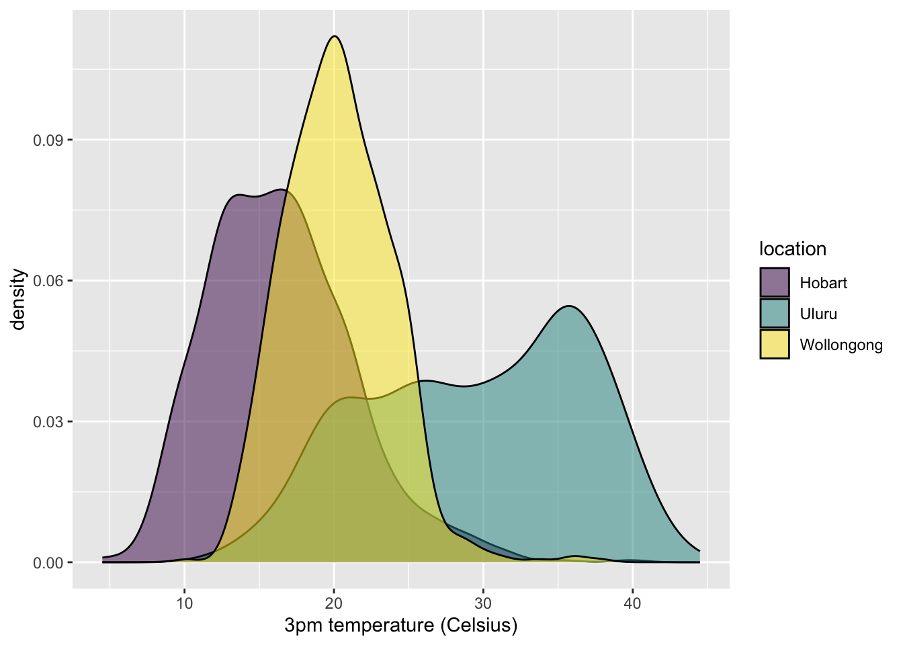

── Attaching core tidyverse packages ──────────────────────── tidyverse 2.0.0 ──
✔ dplyr 1.1.4 ✔ readr 2.1.5
✔ forcats 1.0.0 ✔ stringr 1.5.1
✔ ggplot2 3.5.2 ✔ tibble 3.2.1
✔ lubridate 1.9.4 ✔ tidyr 1.3.1
✔ purrr 1.0.4
── Conflicts ────────────────────────────────────────── tidyverse_conflicts() ──
✖ dplyr::filter() masks stats::filter()
✖ dplyr::lag() masks stats::lag()
ℹ Use the conflicted package (<http://conflicted.r-lib.org/>) to force all conflicts to become errors14 Effective Visualization
14.1 Learning Goals
- Explore the guiding principles of effective visualizations
14.2 Additional Resources
For more information about the topics covered in this chapter, refer to the resources below:
- Equity Awareness for Data Visualizations by Urban Institute
- Telling a story (Chp 29) by Wilke
14.3 7.1 Review
14.3.1 Benefits of Visualizations
- Understand what we’re working with:
- scales & typical outcomes
- outliers, i.e. unusual cases
- patterns & relationships
- Refine research questions & inform next steps of our analysis.
- Communicate our findings and tell a story.
14.4 7.2 No One Right Viz
There is no one right way to visualize a data set, e.g., check out the 100 ways used to visualize one dataset: https://100.datavizproject.com/ The visualized data was featured in this TidyTuesday!
14.5 7.3 Ugly, Bad, Wrong Viz
One way to identify effective viz is to understand what makes a viz ineffective. In the Fundamentals of Data Visualization, Wilke breaks down ineffective viz into 3 categories:
- Wrong
-
The viz is “objectively incorrect”, as in the numbers / trends being displayed are wrong.
- Bad
-
The viz is “unclear, confusing, overly complicated, or deceiving”.
- Ugly
-
The viz correct and clear but The aesthetics are problematic.
14.6 7.4 Exercises
14.6.1 Exercise 1: Professionalism
Let’s examine weather in 3 Australian locations.
The following plot is fine for things like homework or just playing around. But we’ll make it more “professional” looking below.
Warning: Removed 27 rows containing missing values or values outside the scale range
(`geom_point()`).
14.6.1.1 Part a
Replace A, B, C, and D in the code below to:
- Add a short, but descriptive title. Under 10 words.
- Change the x- and y-axis labels, currently just the names of the variables in the dataset. These should be short and include units.
- Change the legend title to “Location” (just for practice, not because it’s better than “location”).
ggplot(weather, aes(y = temp3pm, x = temp9am, color = location)) +
geom_point() +
labs(x = "9am temperature (Celsius)",
y = "3pm temperature (Celsius)",
title = "Daily temperature change in Australian locations",
color = "Location")Warning: Removed 27 rows containing missing values or values outside the scale range
(`geom_point()`).14.6.1.2 Part b
When we’re including our plot in an article, paper, book, or other similar outlet, we should (and are expected to) provide a more descriptive figure caption. Typically, this is instead of a title and is more descriptive of what exactly is being plotted.
Add a figure caption in the top of the chunk. Include your x-axis, y-axis, and legend labels from Part a. Render your Rmd and check out how the figure caption appears.
ggplot(weather, aes(y = temp3pm, x = temp9am, color = location)) +
geom_point() +
labs(x = "9am temperature (Celsius)",
y = "3pm temperature (Celsius)",
color = "Location")Warning: Removed 27 rows containing missing values or values outside the scale range
(`geom_point()`).14.6.2 Exercise 2: Accessibility
Let’s now make a graphic more accessible.
ggplot(weather, aes(x = temp3pm, fill = location)) +
geom_density(alpha = 0.5) +
labs(x = "3pm temperature (Celsius)")Warning: Removed 19 rows containing non-finite outside the scale range
(`stat_density()`).
14.6.2.1 Part a
Let’s add some alt text that can be picked up by screen readers. This is a great resource on writing alt text for data viz. In short, whereas figure captions are quick descriptions which assume that the viz is accessible, alt text is a longer description which assumes the viz is not accessible. Alt text should concisely articulate:
- What your visualization is (e.g. a density plot of 3pm temperatures in Hobart, Uluru, and Wollongong, Australia).
- A 1-sentence description of the most important takeaway.
- A link to your data source if it’s not already in the caption.
Add appropriate alt text at the top of the chunk, in fig-alt. Then render your qmd, and hover over the image in your rendered html file to check out the alt text.

14.6.2.2 Part b
Color is another important accessibility consideration. Let’s check out the color accessibility of our density plot.
- Run the ggplot() code from Part a in your console. The viz will pop up in the Plots tab.
- In the Plots tab, click “Export” then “Save as image”. Save the image somewhere.
- Navigate to https://www.color-blindness.com/coblis-color-blindness-simulator/
- Above the image of crayons (I think it’s crayons?), click “Choose file” and choose the plot file you just saved.
- Click the various simulator buttons (eg: Red-Weak/Protanomaly) to check out how the colors in this plot might appear to others.
- Summarize what you learn. What impact might our color choices have on one’s ability to interpret the viz?
14.6.2.3 Part c
We can change our color schemes! There are many color-blind friendly palettes in R. In the future, we’ll set a default, more color-blind friendly color theme at the top of our Rmds. We can also do this individually for any plot that uses color. Run the chunks below to explore various options.
ggplot(weather, aes(x = temp3pm, fill = location)) +
geom_density(alpha = 0.5) +
labs(x = "3pm temperature (Celsius)") +
scale_fill_viridis_d()Warning: Removed 19 rows containing non-finite outside the scale range
(`stat_density()`).
# In the color scale line:
# Change "fill" to "color" since we use color in the aes()
# Change "d" (discrete) to "c" (continuous) since maxtemp is on a continuous scale
ggplot(weather, aes(y = temp3pm, x = temp9am, color = maxtemp)) +
geom_point(alpha = 0.5) +
labs(x = "9am temperature (Celsius)",
y = "3pm temperature (Celsius)",
color = "Maximum temperature (Celsius)") +
scale_color_viridis_c()Warning: Removed 27 rows containing missing values or values outside the scale range
(`geom_point()`).14.6.3 Exercise 3: Ethics
Let’s scratch the surface of ethics in data viz. Central to this discussion is the consideration of impact.
14.6.3.1 Part a
At a minimum, our data viz should not mislead. Reconsider the climate change example from above. Why is this plot unethical and what impact might it have on policy, public opinion, etc?
Answer: The climate change plot is unethical because it uses a misleading y-axis scale (-10°F to 110°F) that makes the actual temperature changes (which are only a few degrees) appear insignificant. This dramatically minimizes the impact of global warming. Such visualization could mislead the public into believing climate change is not concerning, potentially undermining support for climate action policies and contributing to public doubt about scientific consensus.
14.6.3.2 Part b
Again, data viz ethical considerations go beyond whether or not a plot is misleading. As described in the warm-up, we need to consider: visibility, privacy, power, emotion & embodiment, pluralism, & context. Depending upon the audience and goals of a data viz, addressing these points might require more nuance. Mainly, the viz tools we’ve learned are a great base or foundation, but aren’t the only approaches to data viz.
Pick one or more of the following examples of data viz to discuss with your group. How do the approaches taken:
- emphasize one or more of: visibility, privacy, power, emotion, embodiment, pluralism, and/or context?
- improve upon what we might be able to convey with a simpler bar chart, scatterplot, etc?
Example discussion for W.E.B. Du Bois visualizations:
The Du Bois visualizations emphasize visibility, power, and emotion by bringing attention to the Black experience in America shortly after slavery. These visualizations make visible data that might otherwise be overlooked and challenge power structures by presenting compelling evidence of racial inequalities. The artistic elements add emotional impact that traditional charts might lack, helping viewers connect with the lived experiences of Black Americans in ways that simple bar charts could not. The visualization choices reflect the cultural and historical context while amplifying voices that were typically marginalized.
14.6.4 Exercise 4: Critique
Practice critiquing some more complicated data viz listed at Modern Data Science with R, Exercise 2.5.
Think about the following questions:
- What story does the data graphic tell? What is the main message that you take away from it?
- Can the data graphic be described in terms of the Grammar of Graphics (frame, glyphs, aesthetics, facet, scale, guide)? If so, please describe.
- Critique and/or praise the visualization choices made by the designer. Do they work? Are they misleading? Thought-provoking? Are there things that you would have done differently?
Sample critique response could be entered here after reviewing specific visualizations
14.6.5 Exercise 5: Design Details
This final exercise is just “food for thought”. It’s more of a discussion than an exercise, and gets into some of the finer design details and data viz theory. Go as deep or not deep as you’d like here.
14.6.5.1 Part a: Selectivity
Visual perception is selective, and our attention is often drawn to contrasts from the norm.
Implication: We should design visualizations so that the features we want to highlight stand out in contrast from those that are not worth the audience’s attention.
14.6.5.2 Part b: Familiarity
Our eyes are drawn to familiar patterns. We observe what we know and expect.
Implication: Visualizations work best when they display information as patterns that familiar and easy to spot.
14.6.5.3 Part c: Revisit
Revisit Part b. Do you notice anything in the shadows? Go to https://mac-stat.github.io/images/112/rose2.png for an image.
14.7 7.5 Solutions
The exercises today are discussion based. There are no “solutions”. Happy to chat in office hours about any ideas here!